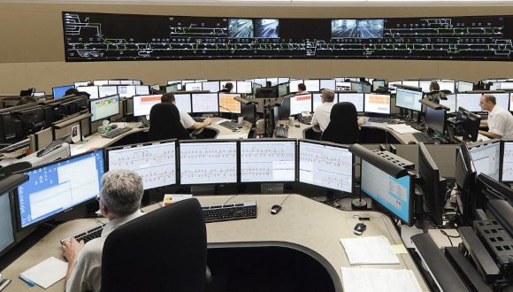
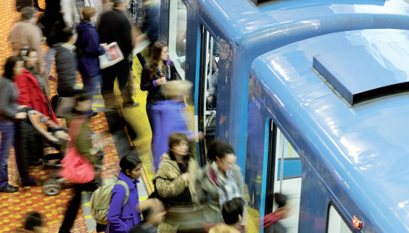
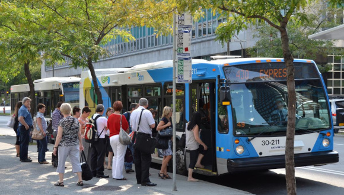

Intro
La Société de transport de Montréal, ou STM, est une entreprise publique qui exploite les transports en commun à Montréal, à savoir le métro et le service d'autobus. Elle fut créée formellement en 2002 pour remplacer la Société de transport de la Communauté urbaine de Montréal à la suite de la fusion municipale de Montréal.
Aujourd’hui, la STM exploite 4 lignes de métro entièrement souterraines composant 68 stations, 221 lignes d'autobus et 23 lignes d'autobus de nuit. Elle assure 364 millions de déplacements par an, soit plus de 1,3 million de déplacements chaque jour.
Elle exploite le deuxième réseau de transport en commun urbain en importance au Canada après celui de la Commission de transport de Toronto et le troisième réseau de métro en Amérique du Nord après le Métro de New York et le Métro de Mexico.
La STM est dirigée par un directeur général. Il répond à un conseil d’administration formé d’élus municipaux et de représentants des usagers du transport en commun.

Métro

La STM exploite quatre lignes de métro. Ce dernier ne voyage pas seulement sur l’ile de Montréal, mais aussi à Laval (la direction Montmorency sur la ligne orange) ainsi qu’à Longueuil (terminus de la ligne jaune). Le service débute à 5 h 30 et se termine entre 0 h 30 et 1 h 30, selon la ligne et le jour de la semaine. Sur les lignes les plus fréquentées (la ligne verte et la ligne orange), l’intervalle prévu entre deux trains aux heures de pointe est de 2 min 30 s à 4 min, soit les matins entre 6 h 30 et 9 h, et en début de soirée entre 16 h et 18 h 30. Pendant les autres moments de la journée, l’intervalle prévu entre deux trains peut être de 4 min à 10 min.
Le métro de Montréal comporte quatre lignes qui sont codifiées par des chiffres et des couleurs : 1 verte, 2 orange, 4 jaune et 5 bleue.
La plupart des noms des stations sont nommés d’après les rues qui sont à côté (76%). Elles sont aussi nommées d’après des institutions, des quartiers ou des parcs avoisinants. Ces endroits ont souvent comme origine des figures historiques, tels que des politiciens, des fonctionnaires ou des membres du clergé.
Bus
Le réseau est constitué de 221 lignes d'autobus (dont 23 lignes de nuit). Il comporte des lignes particulières :
- 10 à 249, Réseau Local : Service régulier
- 250 à 299, Navettes Or : Circuits pour personnes âgées
- 350 à 399, Réseau de Nuit : Circuits disponibles pendant la nuit
- 400 à 499, Réseau Express : Circuits comportant des sections sans arrêt
- 700 à 999, Réseau de Navettes : Circuits vers un lieu touristique ou un évènement
Les planibus, feuillets regroupant le trajet et l’horaire des principaux arrêts, sont offerts à chaque nouvelle saison. Chaque arrêt d’autobus a un code d’arrêt qui permet d’obtenir les heures de passage via le système téléphonique AUTOBUS ou le site web.
La ville de Montréal a annoncé vouloir se doter d’un parc d'autobus entièrement électrique d’ici à 2025. C'est à partir de 2012 que la STM a commencé à n'acheter que des bus électriques et hybrides.
